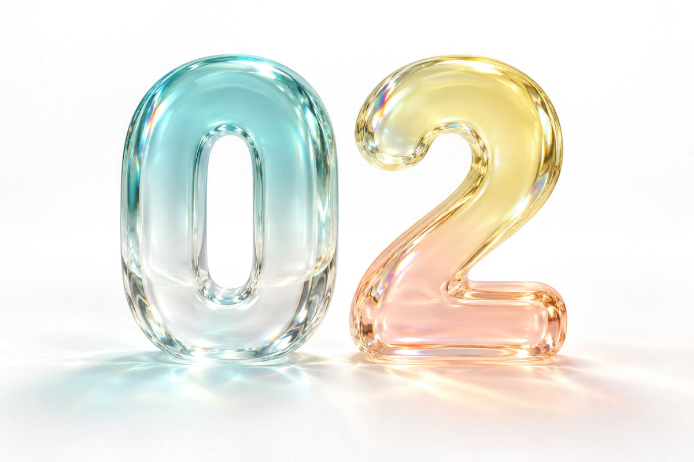
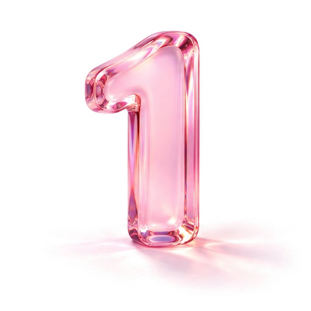
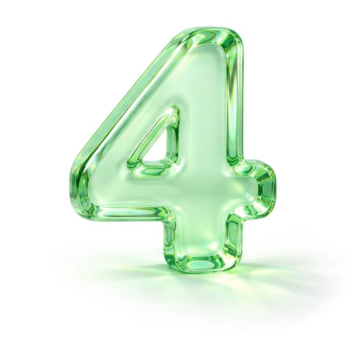

304 of the hardest cases in medicine.
real case records from the new england journal of medicine. the ai gets the case one piece at a time and has to ask for every question and test it wants.

microsoft says its ai diagnoses hard cases more than twice as well as doctors. i ran the test myself. plus anthropic's ipo filing, and my new essay.
board the ride ↓
ai that beats doctors on hard cases.
microsoft's diagnosis study came out in science on oct 22. its ai got 83% of complex cases right. the doctors it was compared with got 36%. the goal suleyman is chasing: "medical superintelligence."
"we're just true believers."mustafa suleyman, to techcrunch
the benchmark is called sdbench. i gave gpt-5 one synthetic case: a 58-year-old woman with six weeks of fever and three weeks of growing confusion. a made-up patient, built for testing.
it asked 30 questions. all at once.
it ordered 22 tests. all at once.
its answer: a rare lymphoma growing inside small blood vessels, reaching the brain.
4 out of 5.
its own questions turned up a bone marrow biopsy done during the stay. it never asked for the result.
this is the live dashboard, not a picture. tap it to turn the body, zoom in and open any question or test the ai ordered.
it opens right here. one tap on "back to the ride" and you're exactly where you left off.
a synthetic test case. no real patient, no medical advice.
real case records from the new england journal of medicine. the ai gets the case one piece at a time and has to ask for every question and test it wants.
primary care doctors and general internists, with reference materials. cases this hard usually go to specialists or a team. they weren't in the comparison.
and it ran on simulations built from past cases, not live patients.
gpt-5.5 alone got 72% of the complex cases. with microsoft's system on top, nearly 87%. on emergency room cases, both scored about 85%.
next it gets tested at beth israel deaconess in boston, next to normal care. no release date yet.
i'm running more practice cases through sdbench and putting each one on this dashboard. next week's essay is what i found: what the ai keeps getting right, and what it keeps skipping.
anthropic filed to go public. ticker: ANT.
the company behind claude filed its prospectus with the sec to list on the nasdaq. it had submitted the filing confidentially in june. no ipo date yet. the nasdaq closed up 0.82% that day.
ai was supposed to replace sales reps. the leaders are hiring more.
the companies furthest ahead in ai, frontier labs included, roughly doubled their sdr teams over the past year, per sam nelson of sdrleader. the jobs ai is taking first are the outsourced call-shop ones.
"it's very easy to ignore an email."sam nelson, to madrona
i was one of those reps before i built one. that's my essay this week, next stop.

i built a healthcare bdr. i was one first.
"i'm skeptical of agent demos that focus entirely on how natural the voice sounds."
"intent is not execution. “send email” is not “email sent.”"
"the script is not the expertise. the agent is not the system. the expertise is the decision architecture underneath both."
simi bharaj
ai that can act for you (send, book, buy, save) will sometimes say it did the thing when it didn't. in my essay i call it intent is not execution. one line catches it.
paste it into your custom instructions (claude: settings, then profile. chatgpt: settings, then personalization). it runs every time, so you never have to remember to ask.
four months inside anthropic, jan 12 to may 8, 2027. you bring expertise where answers take judgment: philosophy, cognitive science, economics, policy or law. $117k to $167k for the four months. you need daily hands-on use of claude and claude code, plus a phd or equivalent research experience. there's a stem track too.
every question and test the ai ordered, on one body. the full story is next week's essay.
next edition drops next tuesday.